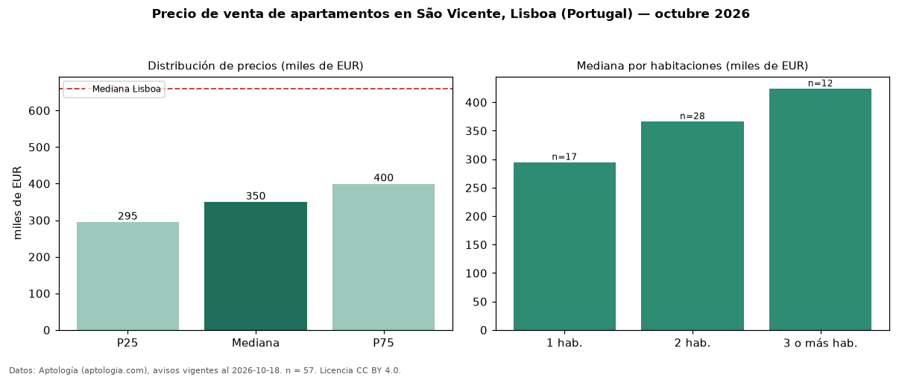

Precio de venta de apartamentos en São Vicente, Lisboa (Portugal) — octubre 2026
Con 57 avisos vigentes, el precio mediano de apartamentos en venta en São Vicente, Lisboa (Portugal) es EUR 349.900. Frente a la mediana de Lisboa para apartamentos (EUR 660.000), queda 47 % por debajo. Por metro cuadrado, la mediana es EUR 6.448/m² (n = 55 avisos con área), 14 % por debajo de Lisboa (EUR 7.458/m²). Por precio mediano es el puesto 20 de 20 zonas de Lisboa con al menos 30 avisos de apartamentos en venta (EUR): entre las más económicas. El área mediana anunciada es 58 m². El segmento con más oferta es el de 2 habitaciones (28 avisos, mediana EUR 366.500); pasar de 1 habitación a 3 o más habitaciones cambia la mediana +44 %. 5 % de los avisos con el dato declara parqueadero o cochera. La mitad central de los avisos va de EUR 295.000 a EUR 399.800 (razón 1,4), una dispersión baja. Datos: Aptología (aptologia.com), CC BY 4.0 — https://www.aptologia.com/pt/venda/lisboa/sao-vicente. Archivos: PDF, CSV con las cifras y gráfica PNG.

| Avisos únicos | 57 |
|---|---|
| Percentil 25 | COP 295.000 |
| Mediana | COP 349.900 |
| Percentil 75 | COP 399.800 |
| Mediana por m² | COP 6.448 |
Fuente: avisos vigentes de portales inmobiliarios recopilados por Aptología, deduplicados (mínimo 30 avisos únicos por celda). Precios pedidos, no cerrados. Fecha: 2026-10-18.